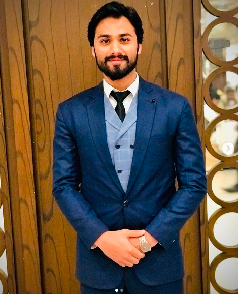

Talha Habib
- talhahabib051@gmail.com
- Sialkot, Pakistan
Personal Information
- Marital Status: Single
- Date of Birth: 10/08/1999
- Gender: Male
Profile
Motivated and skilled Trainee Data Engineer with a strong programming background. Dedicated to continuously expanding knowledge in the data world and applying it to develop innovative solutions. Possesses excellent technical skills, a passion for problem-solving, and a commitment to delivering high-quality results. Strong team player with exceptional communication and analytical abilities. Seeking a challenging role to contribute to the development of enterprise applications and gain valuable experience in a dynamic and fast-paced environment.
Education
| Degree |
Institution |
Year |
Sialkot, Punjab |
Grades |
| Bachelors in Computer Science |
University of Sialkot |
2020 |
Sialkot, Pakistan |
3.7 CGPA |
| FSC in Physics/Mathematics |
Govt Murray College Sialkot |
2018 |
Sialkot |
Grades: 70% |
Skills
- Python Programming
- Data Warehouse
- Data Cleaning / Data Analysis Concepts
- Math and Statistics
- Problem-Solving Skills
- SQL
- Data Engineering / ETL / Data Marts Concepts
- Worked in C/C++/C#
- WordPress Development
- ETL fivetran,Dbt
Professional Experience
- Data Engineer Sep 2023 – Present | Sialkot, Pakistan
- Data warehousing, ETL , Snowflake , Dbt , SQL, Python
- Freelancer 2019 – Present | Sialkot, Pakistan
- Did freelancing with a team as well as individually in Graphic designing from 2017 to 2020, then also did remote projects of WordPress web development.
- Home-Tutor: Mathematics/Physics 2017 – 2022 | Sialkot, Pakistan
- I have had the experience of teaching students as a home-tutor in different subjects, such as mathematics and physics for O-levels and metric students.
- Cashier in Restaurant 08/2016 – 2017 | Sialkot, Pakistan
- Did a part-time cashier job in Deep Fry restaurant, Sialkot, during my F.Sc studies.
Hobbies
-
Horse Riding
- Cricket
- Travelling
- Gym and Fitness
- Business
Certificates
- Python for Data analysis
- Data cleaning and preprocessing
- SQl for Data science
- Intro to Data Science
- Introduction to Data Analyst (Coursera)
- Data Cleaning and Preprocessing
- WordPress
- Data Mining
- HTML CSS JavaScript
- Graphic Design
My Ambitions
- Continuous Learning and Growth
- Professional Excellence
- Innovation and Problem Solving
- Leadership and Mentorship
- Community Involvement
- Work-Life Balance
Ambitions For My Country
- Data-Driven Policies
- Education and Training
- Tech Infrastructure
- Start-up Ecosystem
- Data Privacy and Security
- Collaboration and Global Partnerships